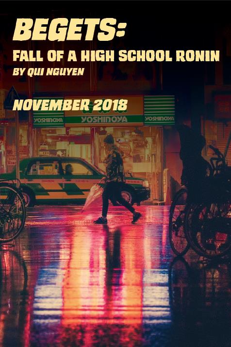

Begets: Fall of a High School Ronin
Audition Details
Begets: Fall of a High School Ronin by Qui Nguyen
November 15-17, 2018
LSPU Hall
About the play
In this action-packed samurai story set inside the halls of an all-American high school, Begets: Fall of a High School Ronin tells the tale of Emi Edwards, a high school geekgurl who's fighting to overthrow the cruel shoguns of her school. However in her journey to right wrongs, will her own cravings for popularity and power corrupt her quest to save the school? Will she able to establish a new world order? Or will violence just beget more violence?
From the Author: "It's All-American High School meets Japanese Manga....It's clearly 'Scott Pilgrim' for the stage with all the irreverent turns and video game callbacks...at it's heart, it's about bullying and love."
A script sample from Samuel French
Characters:
We are casting only actors aged 14-19.
- EMI EDWARDS - 17, female, Geek, badass, Samurai, Mary's love interest / girlfriend
- INSIDE GIRL - 17, female, Emi's inside voice
- LAURA - 17, female, The lovable girl Emi saved
- MARY - 17, female, Queen Bee in-training, Emi's love interest / girlfriend
- ANDREA - 18, female, Queen Bee
- PATRICK - 15, male, Vengeful nerd
- DJ MC - 18, male, Andrea's boyfriend
- TREY - 17, male, QB1 in-training
- PRINCIPAL PARKER - 40s, male/female, Hipster Principal of EHS
- VP FRACONNE - 40s , male/female, Non-hipster VP of EHS
- COUNSELOR THERESA - 22, female, Former cool kid turned teacher
- JILLIE LEE - 19, female, Second year senior
- CHANTAL - 18, female, Patrick's online GF
- SHELDON - 17, male, Goth Henchman
- DUSTIN - 17, male, Goth Henchman
- THATCHER - 18, female, Drama Queen Shogun
- SARAH - 18, female, Teen Tea Partiers Shogun
- MOM - 40s, female, Emi's self-centered Mom
- DAD - 40s, male, Emi's absentee Dad
- CRYSTAL - 18, female, Co-Shogun of the Band Nerds
- KRYSTY - 18, female, Co-Shogun of the Band Nerds
- ROCKER GIRL - 25, female, Anxious girl in the park
- WALTER - 16, male, The real Chantal, in love with Patrick
Please note: We will be doubling several roles, and casting approximately 8 - 10 actors. Several roles will require choreographed stage fighting.
What actors need to know
Rehearsal Schedule
- Rehearsals will begin early in September at Gonzaga High School.
- Rehearsals will be approximately 7 hours per week.
- Rehearsal times will be discussed with actors at their audition.